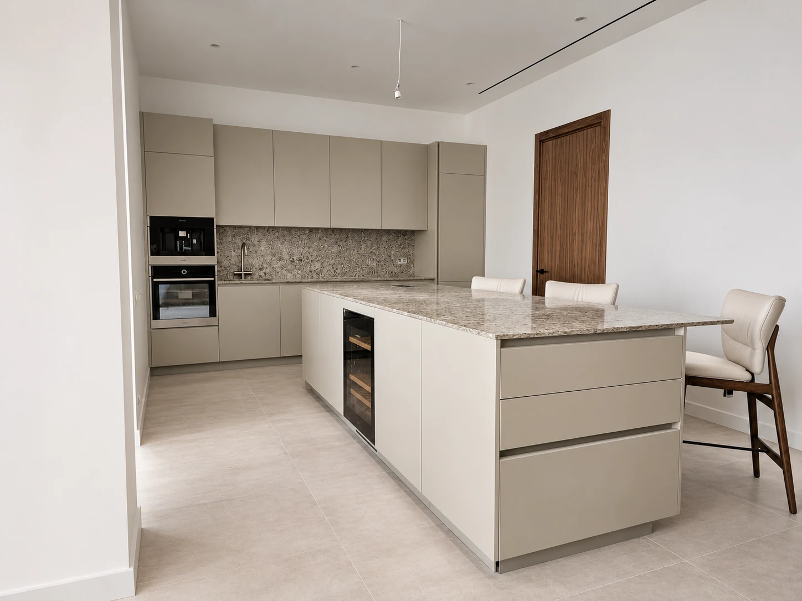
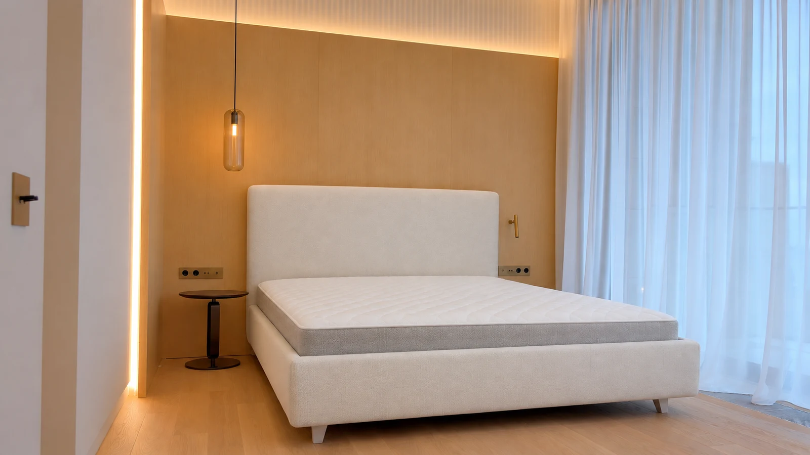
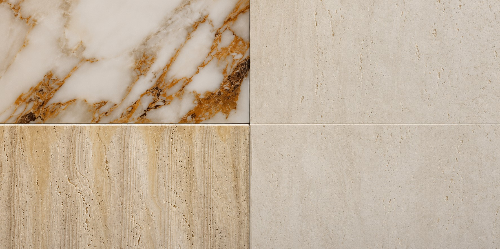

Невидимые с первого взгляда. Заметные каждый день.
01 Планировка
У каждого дома свой ритм
Кому-то нужна большая кухня для встреч с друзьями, кому-то — тихий кабинет или отдельная детская. Обсуждаем ваши пожелания, делаем обмеры, разрабатываем планировку и готовим визуализации и рабочие чертежи.

02 Хранение
Место для ваших вещей
Заранее решаем, где будут храниться одежда, чемоданы и бытовая техника. Проектируем гардеробные и встроенные шкафы, устанавливаем кухню и мебель, подключаем и проверяем технику.
03 Освещение
Свет для разных занятий
Для готовки, чтения, работы и отдыха нужен разный свет. Подбираем светильники, продумываем расположение выключателей и проверяем, как работают сценарии освещения после монтажа.

04 Материалы
Выбираем отделку для вашего дома
Подбираем отделку и сантехнику с учётом влажности, износа и ухода. Согласуем стоимость, заказываем материалы и организуем доставку по графику. Готовим стены, полы и потолки, выполняем чистовую отделку по проекту.

05 Инженерия
Предусматриваем всё до отделки
Увязываем инженерные системы с планировкой и мебелью. По чертежам прокладываем электрику, водоснабжение и канализацию, монтируем отопление, вентиляцию и кондиционирование. Проверяем системы до отделки и оставляем доступ для обслуживания.
Выполняем ремонт квартир и частных домов любой площади в Сочи.
Можно ли обратиться с готовым дизайн-проектом?
Да, пришлите проект. Изучим чертежи и состав работ, после чего обсудим возможность реализации.
Можно ли вести ремонт, находясь в другом городе?
Да. Согласуем проект, материалы и смету дистанционно, организуем работы на объекте. Решения, которые требуют вашего участия, обсудим по телефону или видеосвязи.
Как проходит оплата?
Оплата производится на расчётный счёт компании. Суммы и порядок платежей указываем в договоре.
Сколько времени занимает ремонт?
Сроки определяем после осмотра объекта и согласования проекта. Учитываем объём работ и сроки поставки материалов и оборудования. График ремонта фиксируем в договоре.
Дизайн интерьеров Ремонт под ключ Инженерия Сочи Дизайн интерьеров Ремонт под ключ Инженерия Сочи Дизайн интерьеров Ремонт под ключ Инженерия Сочи Дизайн интерьеров Ремонт под ключ Инженерия Сочи
07 / ДАВАЙТЕ ПОЗНАКОМИМСЯ
Ваш дом начинается с разговора.
Каким вы хотите видеть свой дом? Расскажите нам, а мы подскажем, с чего начать и какие решения подойдут именно вам.

 Ремонт в процессе
Ремонт в процессе